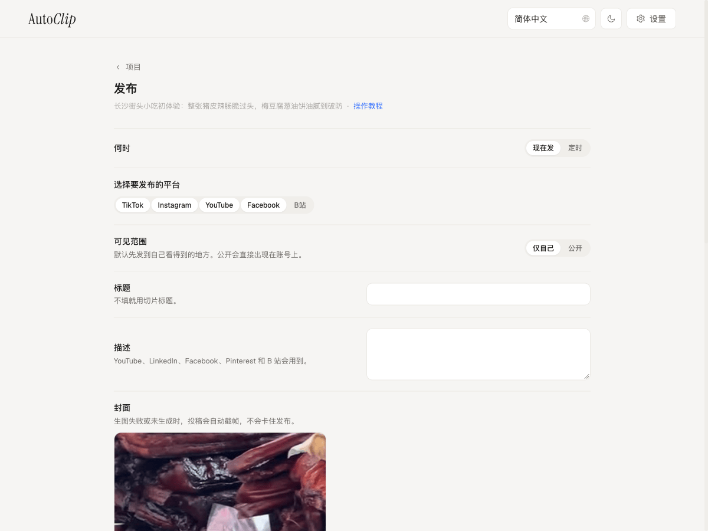

连接账号。海外平台配置 Upload-Post，B 站使用自己的 Cookie。


剪好之后，顺手发布。
选择切片和目标平台，确认标题与可见范围。
立即发布，或安排到以后。你也可以只导出成片。

账号与平台说明
海外平台通过 Upload-Post 发布，需自行配置服务；B 站单独连接。平台可用性与额度以服务商为准。抖音、小红书、快手暂不支持。发布前可检查可见范围。
连接账号。海外平台配置 Upload-Post，B 站使用自己的 Cookie。
选择切片和目标平台，确认标题与可见范围。
立即发布，或安排到以后。你也可以只导出成片。

海外平台通过 Upload-Post 发布，需自行配置服务；B 站单独连接。平台可用性与额度以服务商为准。抖音、小红书、快手暂不支持。发布前可检查可见范围。